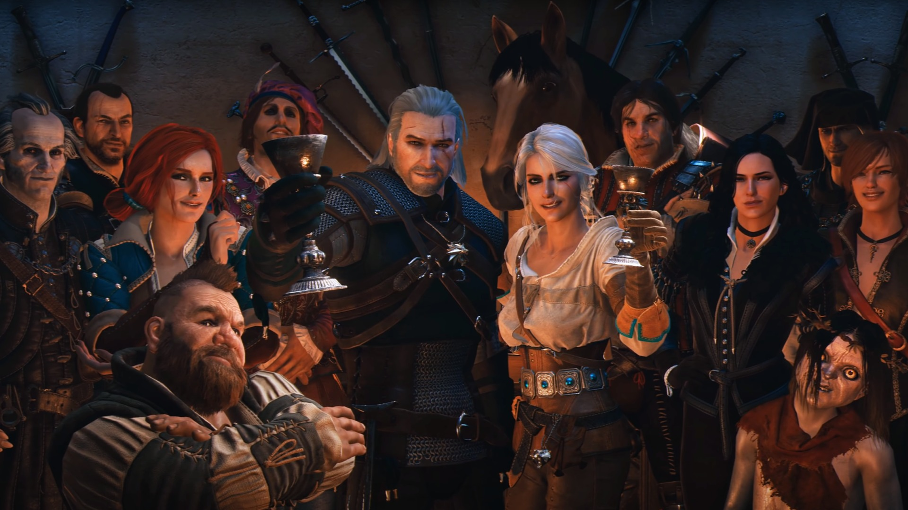

Содержание этой страницы:
Коротко об игре:
«Ведьмак 3: Дикая Охота» — компьютерная игра в жанре action/RPG, разработанная польской студией CD Projekt RED, выпущенная 19 мая 2015 года на Windows, PlayStation 4 и Xbox One, затем 15 октября 2019 года на Nintendo Switch. Сюжетно продолжает игры «Ведьмак» и «Ведьмак 2: Убийцы королей».
Cюжет:
События в Ведьмак 3: Дикая Охота начинаются спустя 2 года после окончания событий Ведьмак 2: Убийцы Королей. К Геральту вернулась память, и теперь он хочет найти близких ему людей, в первую очередь свою возлюбленную Йеннифэр, и уберечь её. Но сделать это будет не так просто, как кажется. Геральт больше не хочет быть марионеткой в политических играх, и теперь он будет заниматься тем, чем хочет сам – заняться поисками Йеннифэр, путешествовать по миру, убивать монстров, или вновь встать на одну из политических сторон. В событиях Ведьмак 2: Убийцы Королей Нильфгаардская Империя проводила тайную политику убийства королей сервера, и теперь, когда эти земли ослабли, они начали полномасштабное наступление. Оставшиеся королевства перегруппировываются, в попытке отбить захватчиков, идет война. В третьей части мы встретим многих, знакомых по предыдущим сериям, персонажей: Лютик, Эскель, Ламберт, Трисс, Золтан, Лето и другие. Появление некоторых из них, зависит от ваших действий во второй части. Начавшаяся война отразится на характере всех персонажей.
Цитаты:

Дийкстра:
— К чему эти слезы. Не огорчайся, достопочтенная госпожа, это вредит красоте...
— Ты, должно быть, много огорчался.
— Я просто родился страшным.
Весемир:
— Нужно во что-то верить. Иначе жить не хочется.

Геральт из Ривии:
— С давних пор самым страшным врагом для людей был вовсе не чужеземец,
а сосед..